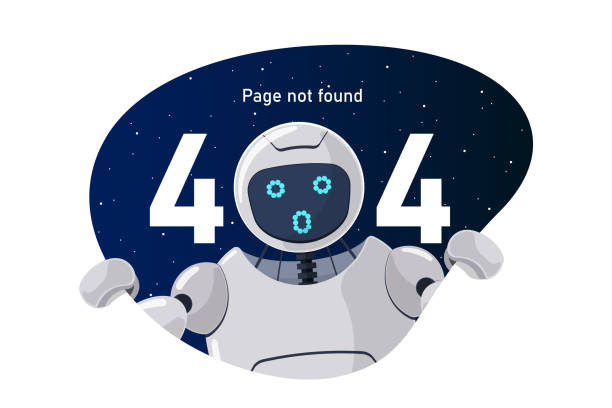
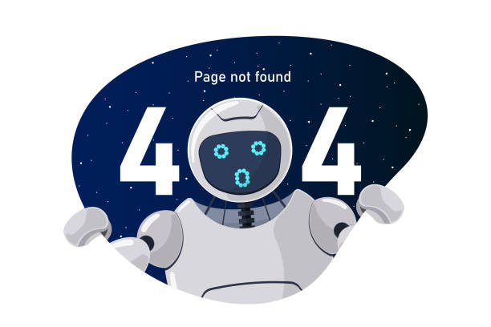

Ops! Algo deu errado
Houve um problema ao processar sua solicitação. Tente novamente em instantes ou volte para a página inicial.
Detalhes técnicos
Houve um problema ao processar sua solicitação. Tente novamente em instantes ou volte para a página inicial.
